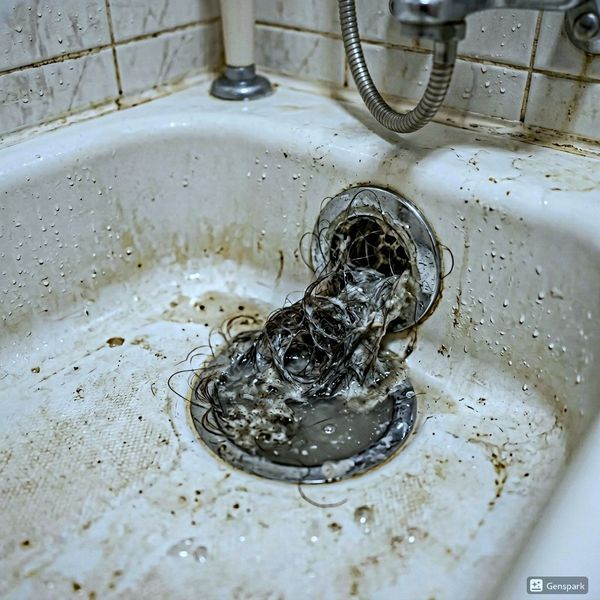
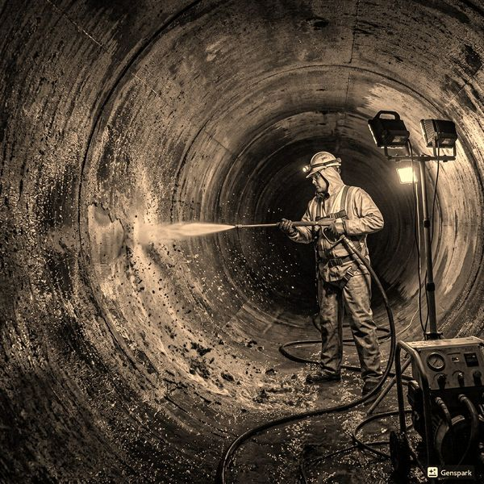
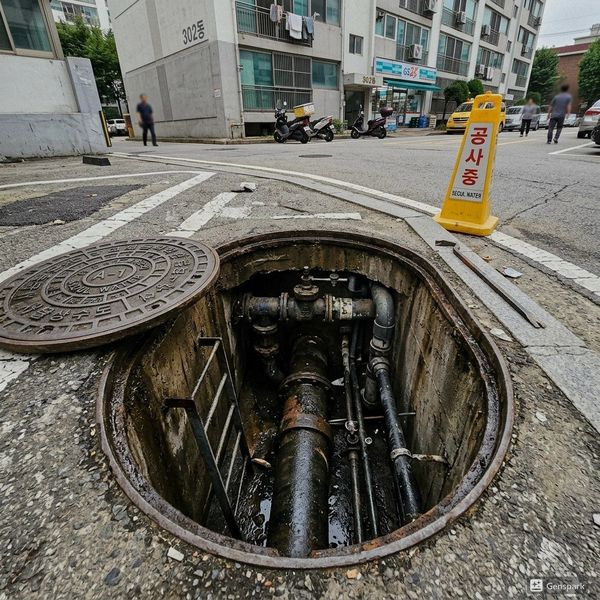

제우스시설관리 | 2025년 4월

갈색이나 검은색 녹물이 나오거나, 배관에서 소음이 나거나, 특정 계절에 냄새가 진동한다면 배관 교체 시점입니다. 또한 벽이나 바닥에 습기가 생기거나 곰팡이가 피면 내부 누수를 의심해야 합니다.
✅ 진단 및 설계 - 50~100만원 (CCTV 검사 포함)
✅ 배관 교체 - 3000~5000만원 (규모별)
✅ 벽·바닥 복구 - 2000~3000만원
✅ 기타 비용 - 폐기물 처리, 임시 가설 등 500~1000만원
일반적으로 30평 아파트 기준 3~6주가 소요됩니다. 사전에 이웃 주민과 충분히 협의하고, 소음과 분진 피해를 최소화하는 것이 중요합니다.
구리배관에서 PVC나 PEX 배관으로 교체하면 부식 위험이 크게 줄어듭니다. 최신 배관재는 소음이 적고 시공성이 우수합니다.
공용 부분 배관은 관리사무소의 허가가 필요합니다. 리모델링 계획을 사전에 공지하고 필요한 서류를 제출하세요.
오래된 배관은 사고의 위험성이 높습니다. 전문가의 진단 후 적절한 시기에 리모델링을 진행하는 것이 장기적으로 가장 경제적입니다.

